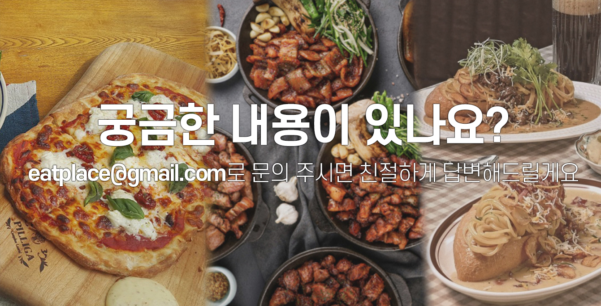

예약 가능한 시간이 없어요. 왜 그런가요?
레스토랑의 좌석 상황 또는 운영 시간에 따라 예약 가능 시간이 제한될 수 있습니다. 직접 전화 문의도 고려해 보세요.
예약확인은 어디서 하나요?
앱 또는 웹사이트의 [내 예약] 메뉴에서 확인할 수 있습니다.
예약 변경 또는 취소는 어떻게 하나요?
예약 내역에서 [예약 변경/취소] 버튼을 눌러 직접 가능합니다. 단, 레스토랑에 따라 취소 수수료가 발생할 수 있으니 정책을 확인해 주세요.
예약 없이 방문해도 되나요?
일부 레스토랑은 워크인 손님도 받지만, 인기 레스토랑은 사전 예약이 필수입니다. 방문 전 확인 부탁드립니다.
포인트나 쿠폰은 어떻게 사용하나요?
레스토랑의 좌석 상황 또는 운영 시간에 따라 예약 가능 시간이 제한될 수 있습니다. 직접 전화 문의도 고려해 보세요.
예약은 어떻게 관리하나요?
잇플 관리자 페이지 또는 관리자용 앱에서 실시간으로 예약 현황을 확인하고 조정할 수 있습니다.